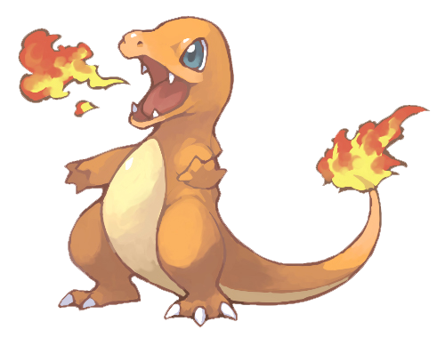

Description
De récentes études prouvent que la flamme qui brûle sur la queue de Salamèche indique son état de santé, mais aussi son caractère. S'il se sent faible, la flamme sera toute petite. Et si par malheur sa flamme s'éteint, il meurt, car c'est le seul moyen pour lui de se refroidir.
Caractéristique
- N° : #004
- Type : Feu
- Sexe : M/F
- Taille : 0.6m
- Poids : 8.5kg
Capacités spéciales
- Brasier : Donne un bonus mulitiplicateur de X1.5 aux attaques feu lorsque les PV de ce Pokémon sont inférieurs à 1/3..
- Force Soleil : Si le soleil brille, les PV du Pokémon diminuent d'1/8ème à chaque tour, mais son Attaque Spéciale est multipliée par 1.5.